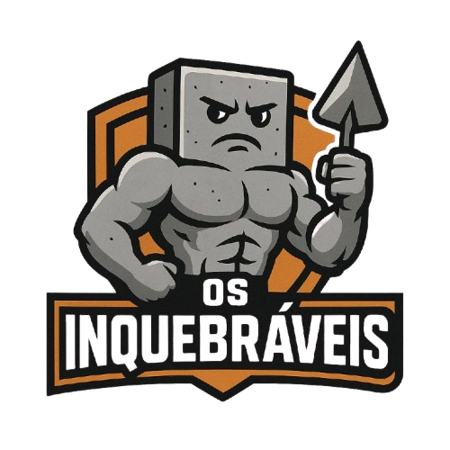
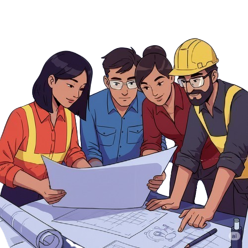

Representando o IFSP Caraguatatuba na competição COCAR 2025

Quem Somos
Somos a equipe Os Inquebráveis, formada por estudantes do 3º semestre de Engenharia Civil do IFSP - Campus Caraguatatuba.
Unidos pela paixão pela construção civil, representamos nossa instituição com orgulho na competição COCAR — Concreto Colorido de Alta Resistência.
Nossa participação no 66º Congresso Brasileiro do Concreto é um passo importante em nossa trajetória acadêmica, onde buscamos aplicar na prática os conhecimentos adquiridos em sala de aula, incentivando a pesquisa, a inovação e o trabalho em equipe.
Nosso Desafio
Participar do COCAR representa muito mais do que desenvolver um concreto inovador — é encarar uma série de desafios técnicos, logísticos e científicos.
A equipe precisa projetar um traço de concreto que combine alta resistência (mínimo de 115 MPa) com coloração estética uniforme, seguindo normas rígidas da ABNT e garantindo total homogeneidade nos corpos de prova. Além disso, cada escolha de material, método de cura e processo de ensaio exige precisão e controle.
Como estreantes no congresso, temos também o desafio institucional de representar o IFSP pela primeira vez na competição, abrindo caminho para futuras turmas e levando adiante o compromisso com a ciência, a engenharia e a educação pública de qualidade
Seja um Patrocinador
Apoiar Os Inquebráveis é muito mais do que financiar uma equipe: é investir no futuro da engenharia brasileira. Como representantes do IFSP na maior competição estudantil de concreto do país, estamos construindo conhecimento, inovação e orgulho acadêmico.
Sua empresa pode fazer parte dessa jornada, associando sua marca a valores como educação pública, ciência aplicada, sustentabilidade e superação de desafios reais.
Oferecemos visibilidade em nossos materiais digitais, camisetas, banners e nas redes sociais. Cada categoria de patrocínio — Ouro, Prata e Bronze — inclui benefícios específicos de exposição e reconhecimento.
Junte-se a nós e torne possível uma experiência transformadora!
Entrar em Contato